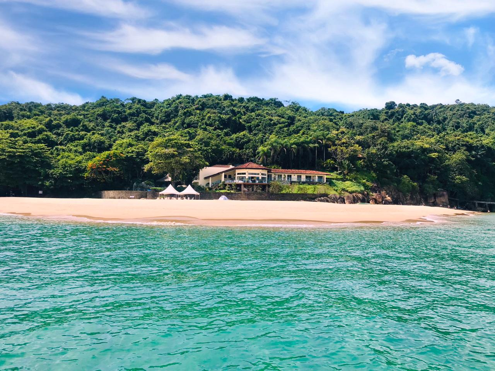
Mais pedidoRoteiro Norte · Ilha das Couves
A ilha de água verde que todo mundo quer conhecer, com paradas nas praias do caminho.
- Ilha das Couves
- Toca da Velha
- Ilha Rachada
- Almada
Ilha das Couves, Toca da Velha e Ilha Rachada em um dia só, saindo do Itaguá. Lancha nova, marinheiro que conhece cada canto e roteiro no ritmo do seu grupo.
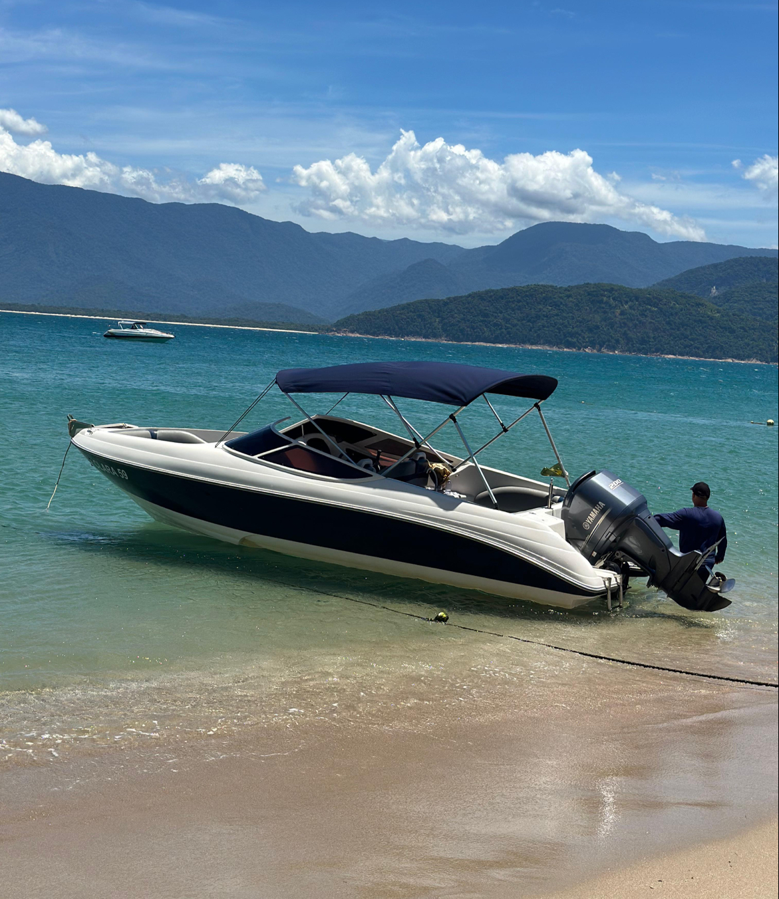
Cada saída é pensada pro grupo que está a bordo: mais mergulho, mais praia ou mais tempo pra foto.

Mais pedidoA ilha de água verde que todo mundo quer conhecer, com paradas nas praias do caminho.
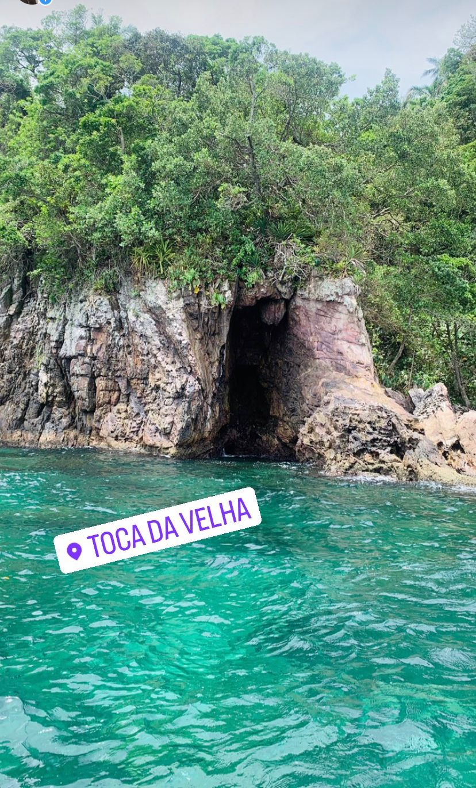
MergulhoÁgua rasa e transparente pra nadar perto das pedras. Com sorte, toninhas acompanham a lancha.
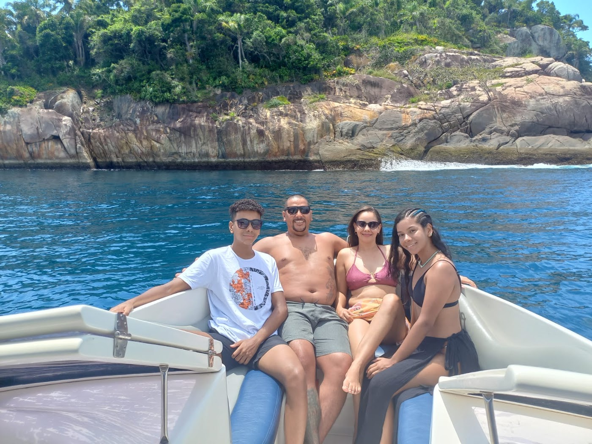
ExclusivoFamília, aniversário ou casal: a lancha é de vocês, com roteiro montado junto. Dá até pra fazer churrasco a bordo.
O resto a gente resolve: horário, rota, segurança e as melhores paradas do dia.
Limpa, potente e estável, com toldo e estofado pra curtir o trajeto.
Conta a história de cada ilha e sabe onde a água está mais clara naquele dia.
Se o tempo não colaborar, a gente remarca pra você aproveitar de verdade.
Tira as dúvidas no WhatsApp e indica o melhor passeio pro seu grupo.
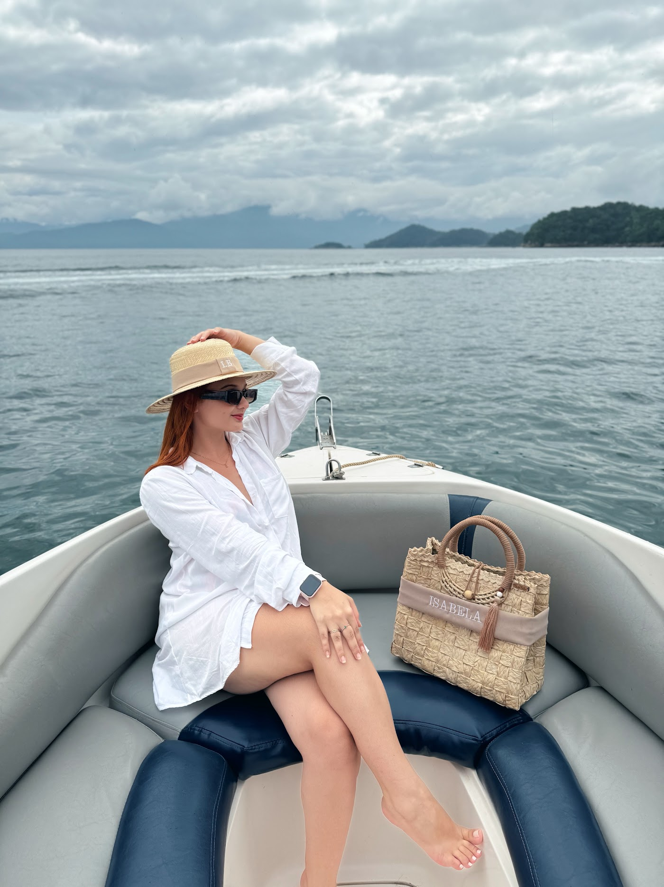
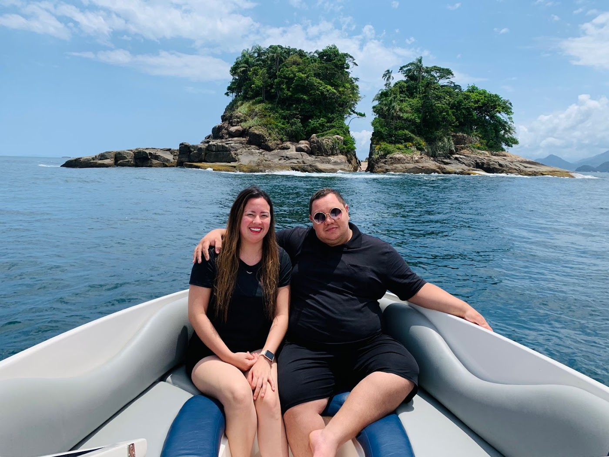
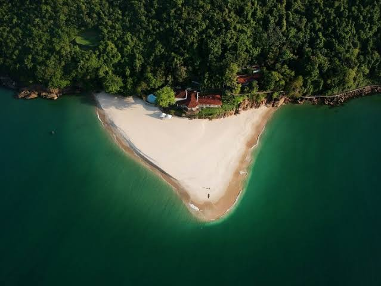
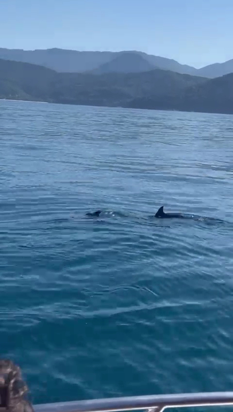
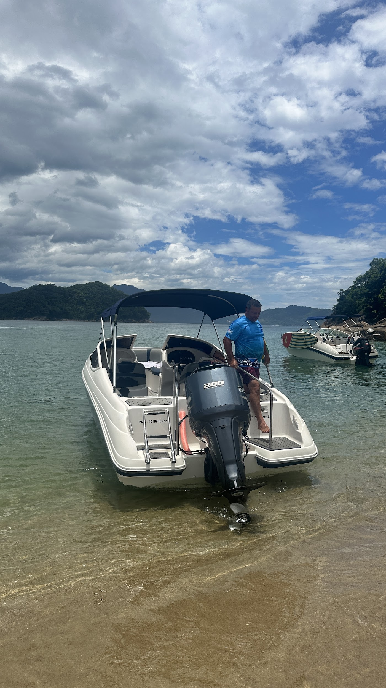
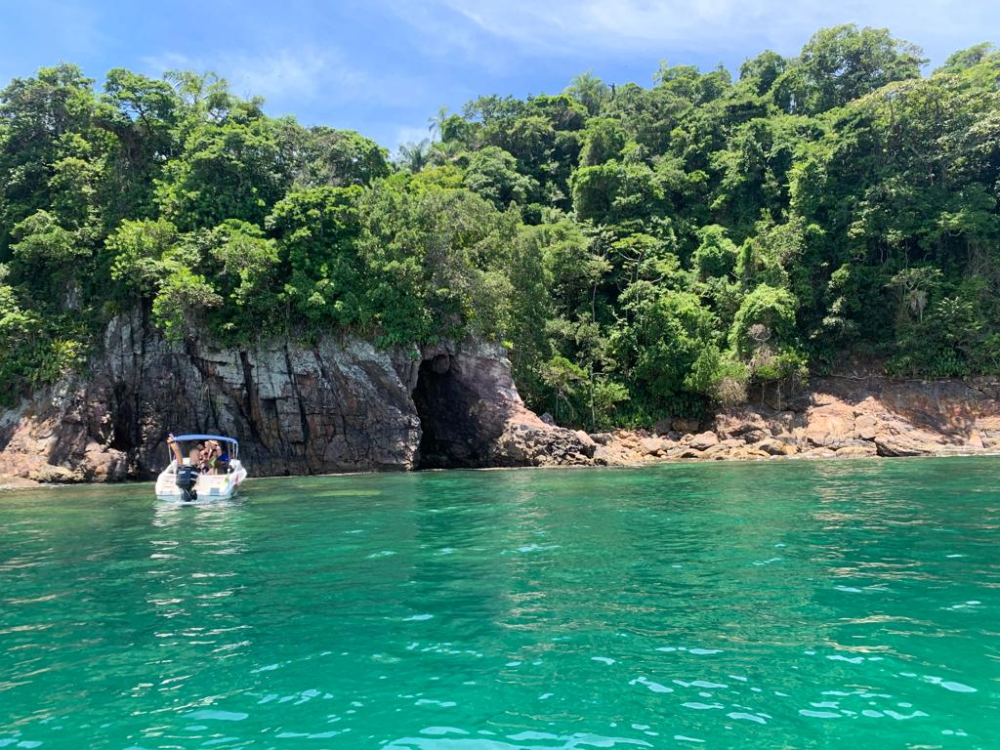
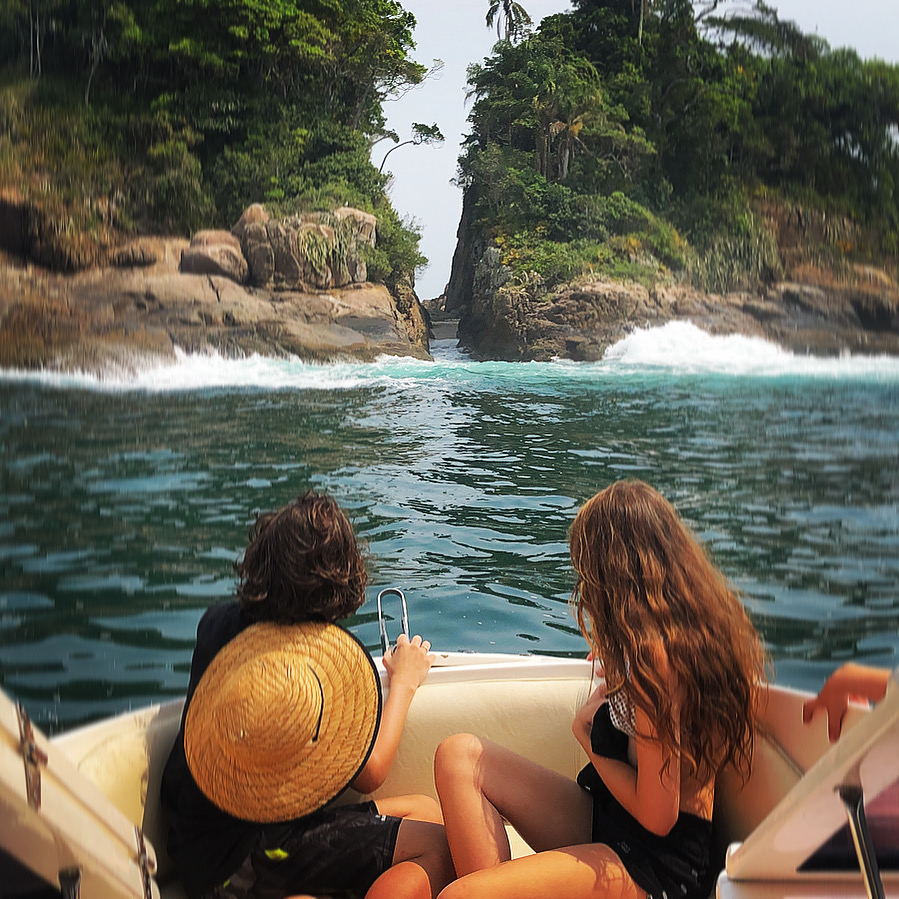
Sem cadastro, sem complicação.
Diz a data e quantas pessoas vão. A gente responde rapidinho.
Indicamos o melhor passeio pro seu grupo e pra previsão do mar.
É só chegar no horário combinado. O marinheiro te espera.
“A lancha é excelente, nova, limpinha, potente e confortável. O melhor custo-benefício da cidade. Passeio nota 10!”
“Marinheiro muito competente, passando muita confiança. Ainda tivemos a sorte de avistar um grupo de toninhas no trajeto.”
“Empresa flexível: o tempo estava ruim no dia agendado e eles reagendaram pra termos uma experiência melhor.”
O embarque é na Av. Leovigildo Dias Vieira, na orla do Itaguá, em Ubatuba. O ponto exato a gente manda pelo WhatsApp quando confirmar.
O Roteiro Norte. Ele passa pela Toca da Velha e pela Ilha Rachada e tem parada nas praias do caminho, como a Almada.
A segurança vem primeiro. Se o tempo não colaborar, a gente reagenda o seu passeio pra outra data.
Pode. Monte o roteiro com a gente pra família, amigos ou casal. Dá até pra combinar churrasco a bordo.
Pode, com colete do tamanho certo. Conte as idades no WhatsApp que a gente indica o roteiro mais tranquilo.
Chame no WhatsApp (12) 99112-3943 com a data e o número de pessoas. A gente confirma valores e horários na hora.
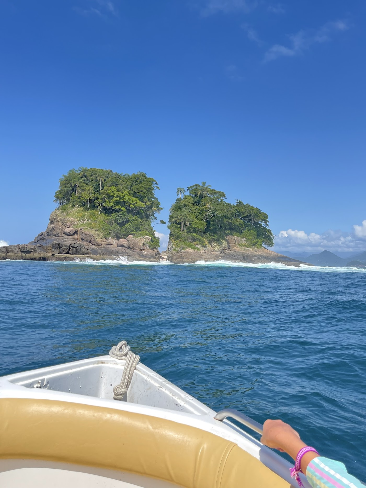
Nos fins de semana e no verão as datas acabam rápido. Garanta a sua.
Reservar pelo WhatsApp